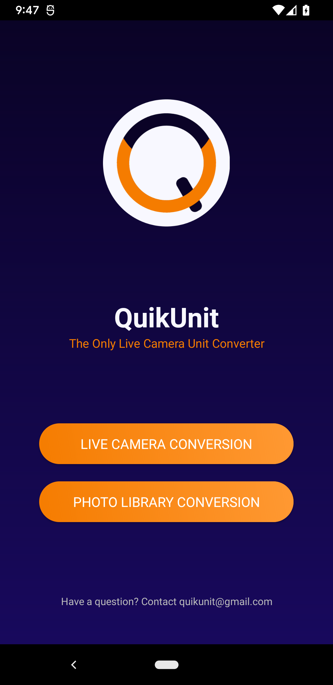
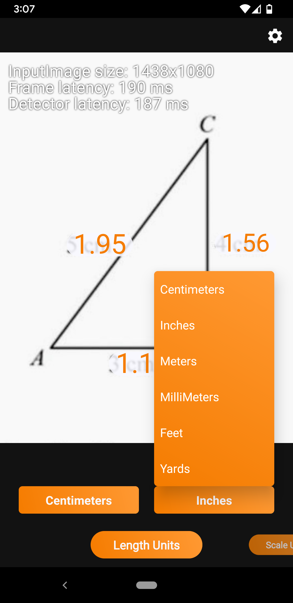

QuikUnit

|
Convert entire diagrams in real time with our live camera conversion |
  |
Unit conversion on a massive scale is made easy with our live camera conversion; just point your phone at the diagram you need converted or scaled, and the new units will populate on the screen in front of you! Many unit conversion options are provided to you, and will fulfill many of your professional needs - whether it is converting entire diagrams from Metric to Imperial in real time, or scaling numbers by any amount through your phone’s camera. Units are obtained using Google's Machine Learning Image Processing, so you can be sure of the quality.
Several length options are provided for you, and you can switch between them through a dropdown menu. Select the unit you are converting from in the first dropdown, and the unit you are converting to in the second.
Scale any unit by a number you enter through the app.